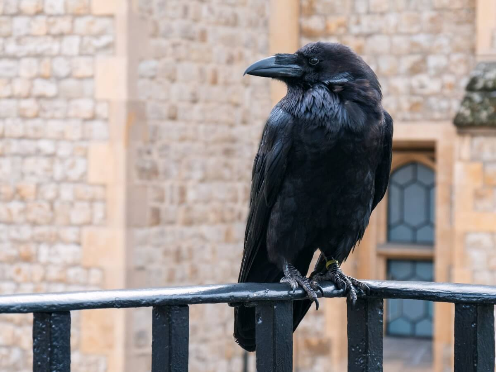

El cuervo es un ave simbólica que ha estado vinculada en multitud de ocasiones con el mal, el demonio y la oscuridad. En este trabajo se mostrarán ejemplos de cómo esa imagen se ha visto trastocada por el tiempo y el espacio, rompiendo de este modo los moldes establecidos que todos tenemos asumidos desde niños. Tanto desde el punto de vista de la "cultura" como desde el de la "Cultura" se van a presentar algunos modelos multiculturales, que sólo pretenden ser una ejemplificación de los motivos y símbolos en los que se puede encuadrar el cuervo.
 Regresar a Índice